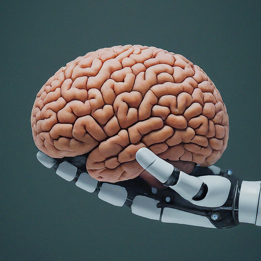
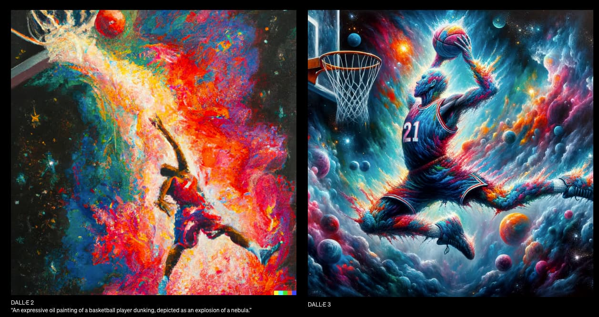
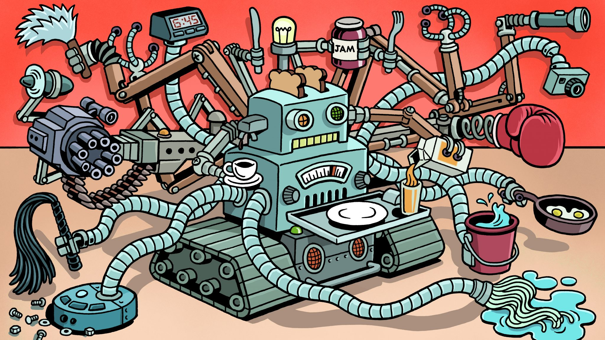

Introdução à IA Generativa
A Inteligência Artificial (IA) generativa é uma subcategoria da IA que se concentra na criação de novos dados ou conteúdos, em vez de apenas interpretar ou classificar dados existentes. Ao contrário da IA convencional, que é projetada para resolver problemas específicos com base em conjuntos de dados de treinamento, a IA generativa é capaz de gerar novas instâncias de dados que se assemelham aos exemplos fornecidos.
Técnicas Fundamentais
As técnicas fundamentais da IA generativa são os blocos de construção essenciais que permitem aos modelos de inteligência artificial criar novos conteúdos de forma autônoma. Entre essas técnicas, destacam-se as Redes Neurais Generativas (GANs) e os Modelos de Linguagem, que desempenham papéis cruciais na geração de dados realistas e coerentes.
Aplicações Atuais
A IA generativa está sendo cada vez mais utilizada em uma variedade de campos para criar conteúdos novos e cativantes. Desde arte e música até texto e imagens, as aplicações atuais da IA generativa estão demonstrando seu potencial para revolucionar a forma como criamos e interagimos com conteúdos digitais.
Avanços Recentes
Os avanços recentes na área da IA generativa têm impulsionado ainda mais a capacidade desses modelos de criar conteúdos complexos e realistas. Com o desenvolvimento de novas arquiteturas de rede e técnicas de treinamento mais avançadas, os modelos de IA generativa estão alcançando níveis sem precedentes de sofisticação e desempenho.
Desafios e Limitações
Embora a IA generativa tenha feito avanços significativos nos últimos anos, ainda enfrenta uma série de desafios e limitações que precisam ser abordados para que possamos explorar todo o seu potencial de forma ética e eficaz.
Aplicações Emergentes
À medida que a IA generativa continua a evoluir, novas e emocionantes aplicações estão surgindo em uma variedade de campos, expandindo ainda mais o impacto dessa tecnologia na sociedade e na economia.
O Futuro da IA Generativa
À medida que a IA generativa continua a avançar, estamos apenas arranhando a superfície do seu verdadeiro potencial. O futuro dessa tecnologia promete transformar radicalmente a forma como criamos e interagimos com conteúdos digitais, abrindo novas oportunidades e desafios ao longo do caminho.
